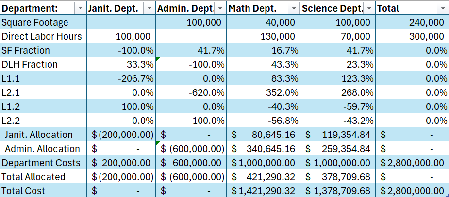
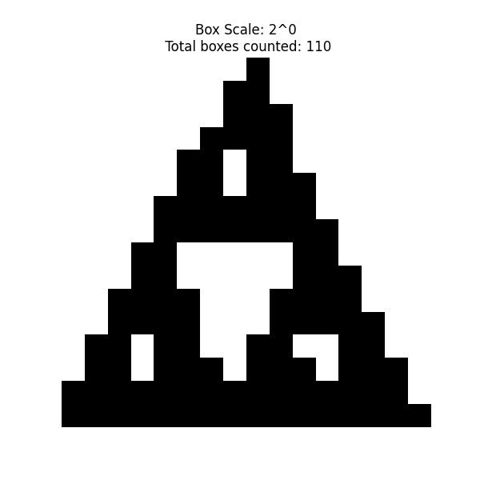

Projects
Marketing Automation
DECA VBC
Used PyAutoGUI, PIL, and OpenCV to automate advertisement budgeting for the DECA Virtual Busines Challenge. Took advantage of simulated poll data to optimize target audiences for market using Excel.
View ProjectAllocation Method Analysis
Montgomery Blair High School
Used Excel to showcase and compare cost allocation methods. Discussed their relation to corporate governance. Implemented a novel "Lattice Allocation" method(Bent, Caplan 2017) based on matrix principles of Linear Algebra. Results were within 0.1% error after only 3 operations.
View ProjectStatistical Tools
Developed a custom statistical toolkit in Python and R implementing cumulative distribution functions (CDFs) and their inverses for chi-squared, t, and z distributions, enabling flexible hypothesis testing and probability calculations.
View ProjectHausdorff Fractal Dimension Calculator
Montgomery Blair Math Team
Built a recursive algorithm–based simulator to generate fractals and compute Hausdorff dimensions via box-counting. Applied fractal analysis to natural features (e.g. coastlines) for quantitative modeling and visualization. Achieved >0.6% error on known fractals.
View Project